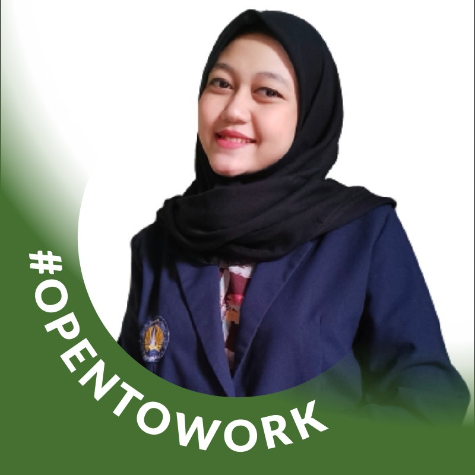

Halo, Saya Anastasya Herlina Anggraeni
Guru/Tentor Matematika & IPA | Sarjana Pendidikan Fresh Graduate
Tentang Saya

Saya lulusan S1 Pendidikan Sains Universitas Negeri Surabaya dengan IPK 3,88 cumlaude yang terampil mengoperasikan Microsoft Office, Google Service, mengolah data pada SPSS, dan menciptakan inovasi pembelajaran melalui teknologi maupun tidak melalui teknologi untuk menciptakan pembelajaran yang berkualitas, sehingga juga untuk menciptakan sumber daya manusia yang berkualitas. Oleh karena itu, saya memiliki passion yang besar di bidang pendidikan yang dinamis mengikuti perkembangan zaman sehingga tidak luput dari pemanfaatan teknologi di dalamnya.
Kegiatan saya saat ini adalah memberikan pembelajaran kepada beberapa siswa secara privat mulai dari SD hingga SMA. Saya juga memiliki pengalaman dalam memberikan pembelajaran kelompok di sebuah lembaga bimbingan belajar dari tingkat SD hingga SMA selama 3 tahun mulai dari tahun 2019-2022. Selain sebagai tentor, saya juga memiliki pengalaman mengajar sebagai guru mata pelajaran IPA di SMP Negeri 30 Surabaya untuk kelas 7 dengan Kurikulum Merdeka, kelas 8 dan 9 dengan Kurikulum 13 tahun ajaran 2022/2023 selama 6 bulan saat saya masih aktif belajar semester 7 dalam kegiatan Pengenalan Lapangan Persekolahan (PLP) pada program Merdeka Belajar Kampus Merdeka (MBKM). Dalam memberikan pembelajaran, saya bertanggung jawab untuk memberikan pendidikan yang berkualitas, melalui penyiapan materi yang baik dengan layanan Google Service dan Microsoft Office serta melakukan inovasi cara penyampaian pembelajaran pada materi ini baik melalui teknologi maupun tidak (lebih memanfaatkan teknologi), sehingga saya berhasil dalam membimbing lebih dari 300 siswa berprestasi untuk masuk SMP, SMA, Perguruan Tinggi, hingga sekolah negeri favorit. Selain itu, saya juga bertanggung jawab menginput data kehadiran siswa setiap hari melalui layanan Microsoft Office, menganalisis perkembangan siswa secara berkala dengan bantuan Microsoft Office dan SPSS. Saya telah berhasil membina hubungan baik dengan siswa dan wali melalui loyalitas, interpersonal, dan keterampilan komunikasi yang baik.
Saya mencari kesempatan untuk berkontribusi lebih jauh di dunia pendidikan untuk dapat menerapkan pengetahuan dan minat saya. Mari terhubung di LinkedIn atau tasyaherlina16@gmail.com
Pengalaman
Guru Tentor
Guru privat di rumah sendiri
Pendidikan
Sarjana - Pendidikan Sains
Universitas Negeri Surabaya
Kemampuan
Mengajar Cakap
Ilmu Pengetahuan Alam Cakap
Microsoft Office Cakap
Kumpulan Materi

Sekolah Menengah Pertama
Perangkat Pembelajaran IPAS
Sekolah Menengah Atas
Perangkat Pembelajaran Kimia, Biologi, Fisika